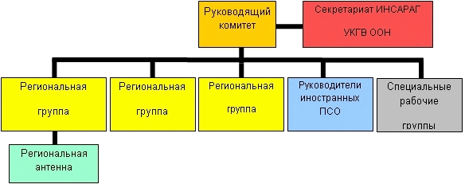

ИНСАРАГ состоит из нескольких групп и делится по географическому принципу. Все эти элементы подотчетны международным органам Руководящей группы ИНСАРАГ (Steering Group). Подобная структура обеспечивает выполнение целей ИНСАРАГ на региональном уровне и вместе с тем гарантирует, что они реализуются в одном ключе с решениями
принятыми на глобальном уровне.

Руководящая группа ИНСАРАГ
Общее руководство ИНСАРАГ осуществляется ее Руководящей группой. Данная группа проводит встречи на ежегодной основе и состоит из Председателя ИНСАРАГ, Председателей и заместителей Председателей региональных групп, национальных контактных лиц стран успешно прошедших международную аттестацию ИНСАРАГ (IEC), председателей специальных рабочих групп ИНСАРАГ, а также представителей Секретариата ИНСАРАГ. Руководящая группа ИНСАРАГ управляет процессом принятия решений, являясь гарантом того, что опубликованные рекомендации и предпринимаемые действия согласованны в рамках всей ИНСАРАГ.
Секретариат ИНСАРАГ
Посредством структурированного обмена информацией Секретариат ИНСАРАГ обеспечивает скоординированное взаимодействие между различными элементами ИНСАРАГ, включая, при необходимости, передачу информации через Руководящую группу ИНСАРАГ. В практическом плане Секретариат также занимается организацией различных мероприятий во взаимодействии с принимающими их государствами. Помимо этого, Секретариат занимается вопросами администрирования веб-сайта ИНСАРАГ и ведет реестр международных поисково-спасательных отрядов (INSARAG USAR Directory). Секретариат организационно входит в состав отдела поддержки полевой координации (FCSS) управления чрезвычайных служб (ESB) Женевского отделения Управления ООН по координации гуманитарных вопросов (УКГВ ООН).
Региональные группы ИНСАРАГ
ИНСАРАГ подразделяется на три региональные группы: Африка/Европа/Ближний Восток, Северная и Южная Америка, Азия/Тихоокеанский регион. Помимо региональных мероприятий, таких как учения, данные Региональные группы также проводят на ежегодной основе свои встречи с целью выработки решений по вопросам укрепления региональных возможностей в области проведения поисково-спасательных работ (ПСР) и обеспечения реализации принятых Руководящей группой ИНСАРАГ стратегических подходов и принципов. Такие встречи являются инструментом сбора соответствующей информации от стран-участниц конкретной Региональной группы с целью доведения ее до сведения Руководящей группы ИНСАРАГ. Каждая Региональная группа имеет своего регионального Председателя и регионального заместителя Председателя (более подробная информация о Региональных группах находится на соответствующей странице).
При необходимости, Руководящая группа может принять решение о создании Региональной Антенны ИНСАРАГ. Такая структура создается и размещается в одной из стран-участниц ИНСАРАГ с целью повышения возможностей деятельности сети ИНСАРАГ в регионе. В настоящий момент существует только одна Региональная Антенна ИНСАРАГ в региональной группе Африка/Европа/Ближний Восток.
Рабочие группы ИНСАРАГ
Специальные Рабочие группы создаются по запросу Руководящей группы ИНСАРАГ. Их целью является поиск решений и отработка специфических вопросов определенных ИНСАРАГ. После выполнения конкретного задания или отработки вопроса Рабочая группа распускается.
Руководители международных поисково-спасательных отрядов
На ежегодной основе проводятся встречи межрегиональной сети опытных руководителей в области проведения поисково-спасательных работ (ПСР). Этот форум предоставляет площадку для обсуждения технических вопросов связанных с вопросами подготовки и изучения передового опыта полученного в ходе проведения реальных ПСР и участия в учениях. Результатом служит общая информация, полученная на основе советов и опыта, которая в дальнейшем используется для совершенствования оперативных возможностей при проведении ПСР на международном уровне.